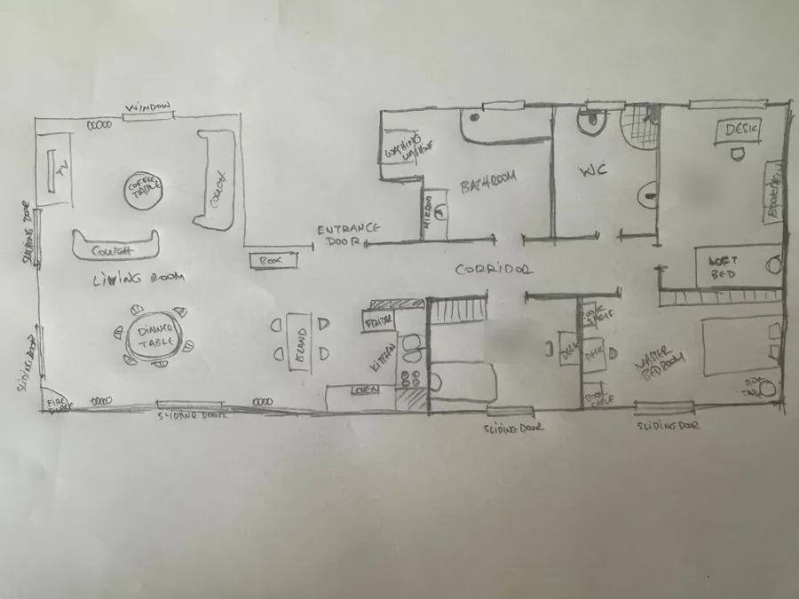
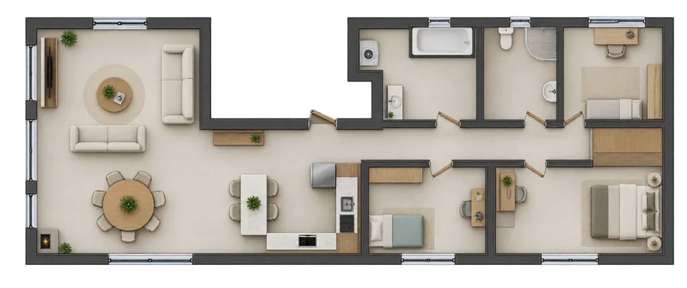
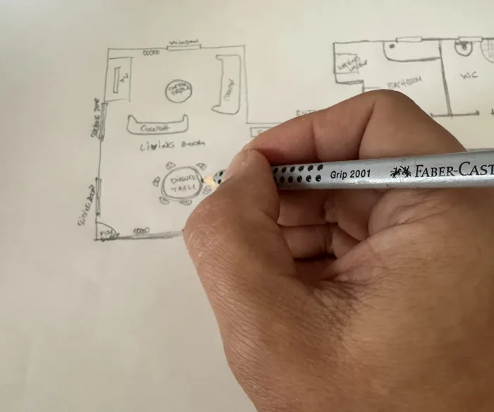

Turn your sketch into a floorplan in 10 minutes
No floorplan? Draw one with a pencil and let an AI image tool turn it into a clean plan. It takes about 15 minutes.


Five steps
- Draw your layout on white paper. Use a dark pencil or pen. Include walls, doors, windows and room names, plus the big furniture if you like. Keep the proportions roughly right and write down measurements you know.

- Photograph it from directly above. Lay the paper flat, use good, even light without shadows, and make sure the whole drawing is in the picture.
- Upload the photo to an AI tool that can create or edit images, for example ChatGPT or Gemini, and paste the prompt below.
- Check the result against your sketch, especially doors, windows and which rooms connect. Ask for corrections where needed.
- Save the image, preferably as PNG, then use it when you add a plan in Device Floorplan. Measure one horizontal and one vertical wall in step 1 to set the real scale.
The prompt
Copy this and paste it together with the photo of your sketch:
Turn my attached hand-drawn sketch into a clean, high-quality floorplan image for a Home Assistant dashboard. Treat my sketch as the source of truth: - Preserve the layout, orientation, room connections and approximate proportions. - Keep walls, doors and windows in their drawn locations. - Follow any measurements I provided. - Do not add, remove or rearrange rooms. - If an important detail is unclear, ask me before generating the image. Create a straight-down, orthographic view with no perspective or isometric tilt. Show the entire floor on one image, with the roof removed and no rooms cropped. Use clear wall outlines, light neutral floors and subtle shadows. Include minimal, appropriately scaled furniture based on the room names, without hiding doors or circulation paths. Keep the design uncluttered so smart-home device markers and readings will be easy to see. Make the background outside the building transparent, while keeping interior floors, walls and furniture opaque. If my sketch includes a garden, balcony or terrace, keep those areas visible and make only the area outside the property transparent. If you cannot create a real transparent background, use a plain white background instead, never a checkerboard pattern. Do not include room labels, measurements, titles, legends, watermarks, smart-home icons or sensor readings in the finished image. Output one high-resolution PNG image, ideally at least 1600 pixels on its longest side, with a small margin around the complete floorplan. Create the image itself, rather than instructions or code.
Check before you place devices. AI can interpret your drawing incorrectly. Review the layout before placing your devices. Measurements and scale are set separately in Device Floorplan, so a plan that is slightly stretched still works.
Fixing the result
Reply in the same chat; short, specific requests work best:
- "Keep the exact layout of my sketch. Only change the drawing style."
- "The bathroom door is on the corridor side, not in the bedroom."
- "The living room is too small: it should be about twice as wide as the kitchen."
- "Remove the room labels and the text."
- "The background is a checkerboard pattern. Make it really transparent, or plain white."
Good to know
- Privacy. You are sending a drawing of your home to an online service. Leave out names and anything you'd rather not share.
- Why no room labels? Device Floorplan shows your Home Assistant room names itself.
- Transparent or white? Both work. Transparent looks best on dark and light dashboard themes.
- Results vary. Generate a few versions and keep the one closest to your sketch.